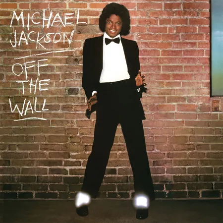

Michael Jackson - Off the Wall (1979) - Album Review
-
Michael Jackson - Off the Wall (1979) - Album Review
Off the Wall Review
In 1979, Michael Jackson's "Off the Wall" marked a transformative moment, liberating him from child stardom. The album, produced by Quincy Jones, fused disco's infectious joy with sophisticated orchestration, setting it apart. Michael's self-proclaimed metamorphosis into "MJ" aligned with disco's utopian spirit, breaking racial barriers. Despite the impending '80s challenges, the album remains a timeless escape, untouched by subsequent controversies. Spike Lee's documentary, "Michael Jackson's Journey from Motown to Off the Wall," pays homage to this era. "Off the Wall" encapsulates Michael's pursuit of magic, delivering a joyous, consequence-free Neverland for 41 unforgettable minutes.
Album Information
"Off the Wall" is Michael Jackson's fifth studio album, released on August 10, 1979, by Epic Records. It marked a pivotal moment in Jackson's career, being his first album released through Epic Records and produced by Quincy Jones. Their collaboration began during the filming of the 1978 movie "The Wiz." The album showcases a departure from Jackson's Motown roots, embracing disco's influence and introducing a more mature sound. "Off the Wall" laid the foundation for Jackson's iconic solo career and is celebrated for its timeless appeal and cultural significance.
Reviewed on September 28th 2023
- 